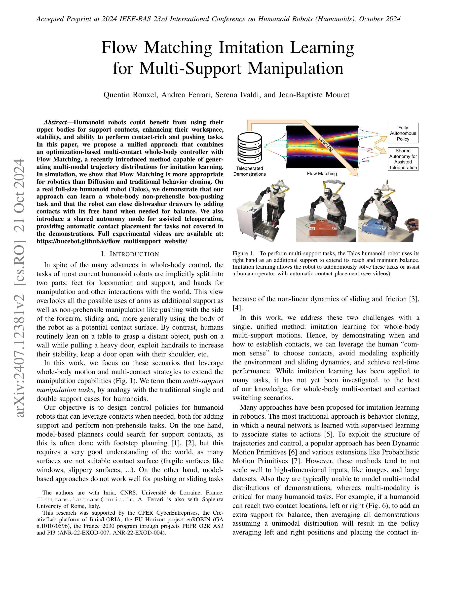
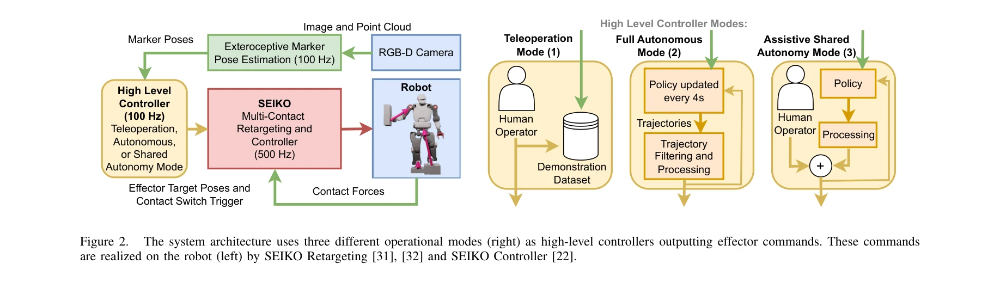

저자: Quentin Rouxel, Andrea Ferrari, Serena Ivaldi, Jean-Baptiste Mouret | 날짜: 2024-07-17 | URL: https://arxiv.org/abs/2407.12381

Figure 1.
본 논문은 Flow Matching 생성 모델을 활용하여 휴머노이드 로봇이 팔을 추가 지지점으로 사용하는 다중 접촉 조작 작업을 모방 학습으로 학습할 수 있는 통합 접근법을 제시한다. Talos 로봇에서 상자 밀기 및 식기세척기 문 닫기 작업을 성공적으로 수행하며, 공유 자율성 모드를 통해 인간 조작자를 지원한다.
Figure 1.

Figure 2.
총평: 본 논문은 Flow Matching을 실제 휴머노이드 로봇의 다중 접촉 조작 학습에 처음 적용한 혁신적 연구로, 이론적 기여와 실제 구현이 잘 결합되어 있다. 공유 자율성 모드를 통한 실용적 응용 가치와 생성 모델의 로봇 적용 가능성을 명확히 입증한다.